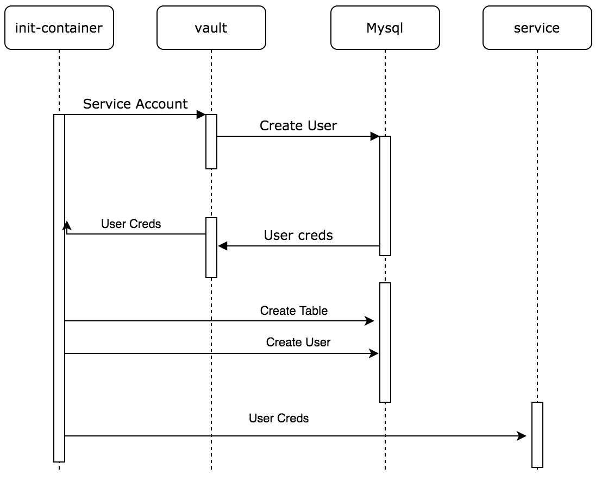

DevOps engineer is a bit of a misnomer. Really, it should be broken into two main functions: platform engineering and platform automation. Platform engineering being “get k8s running so they can deploy their workload”, and platform automation being “magic up a way we don’t need to manually provision environments any more”.
This post definitely fits firmly into the second one. In a lot of cases, developers have access to modify AWS, to the build system, create repos. In our case, and maybe more broadly, there isn’t an obious, automated, RBAC’ed way to create and destroy DBs, especially for ephemeral environments.
Moreover, automation, one of the 5 tenets of Atlassian’s CALM DevOps framework, and it’s maybe the easier to get through without a lot of organisational support. Something along the lines of if we can effect change without rocking too many boats, we can be a swift and effective tide, to rise all boats.
the problem
In our team, only DevOps can create new DBs, be it prod or nonprod.
Detailed internally, it’s a 13 step process, where the last one is
cry. This is frankly too much overhead, it’s slow, and no one wants to
do it.
what do we do?
vault to the rescue. Hashicorp Vault (vault) is a distributed secret management system, rather than a specific database provisioning tool. Moreover, vault is increasingly becoming the place to manage secrets centrally. However, it has a much larger featureset than just storing text secrets. Vault carries forward the ideas of different operators, that can control access to all sorts of different services, whether that be MySQL, or a CA.
Broadly, an application auths with vault via iam credentials, or a service account (when using k8s auth method), or some static token. Once authed, the entity can access some resources as defined by policy.
so how does this actually work then?
 In this case, when an init container for some service starts, we connect to Vault, and retrieve our MySQL credentials. Then, the init container will create an empty database with the service name, create new, lower powered credentials (that don’t allow creation/deletion of DBs) and dump the credentials the actual service should run with into the environment of the service.
If the database already exists, the service will simply pass the low strength credentials through to the service starting.
does it get even better?
It certainly does! Since we have an init container doing the heavy lifting for actually provisioning the database, we can do some extra things. For example, another feature that is barely discussed, but would be much appreciated is automated database restoration, ie. taking a snapshot from some other environment and restoring to this new one. By just including a bkp identifier to their helm chart, a dev can have a backup restored on the first start of their system. Great, now the environment is even more ephemeral. All can be recreated and blown away at will.
Database cleanup, for no longer needed, old, cruddy, useless databases would need to be added. We could implement on a post-delete helm hook, that the database for that service is deleted. This would need to be used really carefully to make sure that production data was not deleted. Perhaps backing the db up before deletion would be enough?
the end?
vault is a super cool way to go to solve this problem, along with
init and delete hooks in helm. The next installment of this series
will be some more implementation details about how we went!